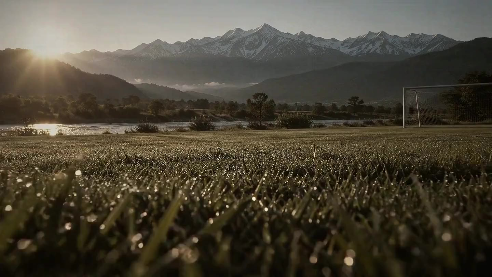
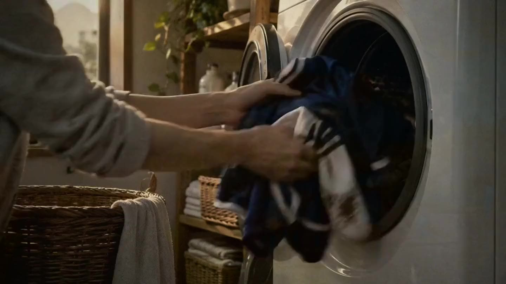
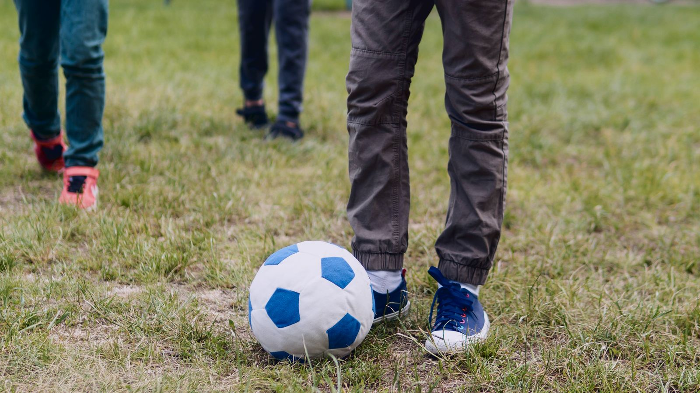
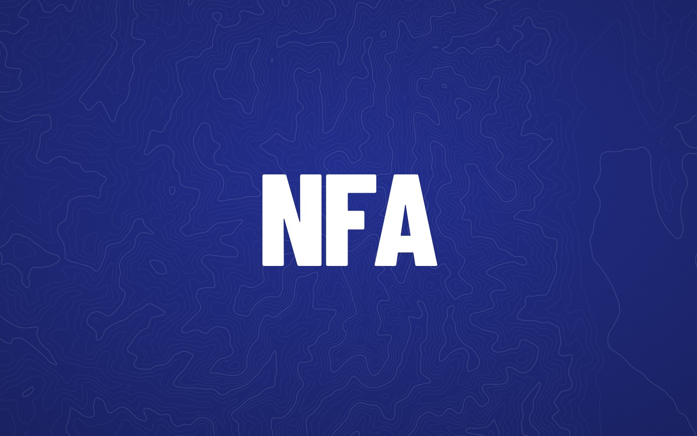

ピッチの夢と地域への貢献が、
好循環で結ばれる信州。
結果2026.10.14 更新JFA第50回全日本U-12サッカー選手権大会長野県大会結果2026.10.14 更新高円宮杯 JFA U-15 サッカーリーグ 2026 長野北信地区 2部A結果2026.10.14 更新2026年度 U-13サッカーナイターリーグ中信地区資料2026.10.14 更新2026年度 長野県中学校新人大会 サッカー競技の部東信地区大会結果2026.10.14 更新JFA全日本O-50サッカー大会 長野県リーグ（NS50リーグ）結果2026.10.13 更新2026年度 第105回高校サッカー選手権長野県大会結果2026.10.07 更新高円宮杯 JFA U-18 サッカーリーグ 2026 長野県４部南信地区結果2026.10.07 更新JFA第30回全日本U-18女子サッカー選手権大会 長野県大会結果2026.10.07 更新北信越O-45カップサッカー大会 長野県大会（NS45カップ）結果2026.10.07 更新北信越O-55カップサッカー大会 長野県大会（NS55カップ）結果2026.10.07 更新北信越O-65カップサッカー大会 長野県大会（NS65カップ）結果2026.09.28 更新JFA 長野県U-12サッカーリーグ2026南信リーグ 後期1部資料2026.09.28 更新2026年度 長野県クラブユースサッカー選手権（U-14）結果2026.09.24 更新U-18 長野県女子育成サッカーリーグ 2026後期結果2026.09.07 更新長野県フットボールリーグ1部資料2026.09.07 更新第35回全日本高等学校女子サッカー選手権大会 第17回長野県高等学校女子サッカー選手権大会結果2026.09.03 更新マクセルイズミ杯長野県サッカー選手権大会結果2026.06.10 更新2026年度 高校総体《男子・女子》男子 令和8年度 県大会資料2026.06.01 更新全国社会人サッカー選手権大会長野県大会資料2026.05.26 更新全国クラブチームサッカー選手権大会長野県大会
VISION
ビジョン
Life+1ピッチの夢と地域への貢献が、好循環で結ばれる信州。
サッカーに情熱を燃やす一人ひとりの「夢」を育み、「挑戦」を支え、たくましい「成長」へと導く。育った人材が地域社会に「貢献」し、また次の世代の夢を育む「終わらない好循環」を目指します。
VALUEリスペクト・フェアプレー・サステナブル
- 01夢
- 02挑戦
- 03成長
- 04貢献

01夢DREAM
サッカーに情熱を燃やす一人ひとりの「夢」を育みます。
 02
02挑戦CHALLENGE
一人ひとりの「挑戦」を支えます。
 03
03成長GROWTH
たくましい「成長」へと導きます。

04貢献CONTRIBUTION
育った人材が地域社会に「貢献」し、信州の未来を切り拓く力となります。
FOR YOU
目的別のご案内目的に合わせて、必要な情報をまとめています。

AI SEARCH
探しているものを、そのまま聞いてくださいどの委員会の担当かを考える必要はありません。知りたいことを言葉のまま入力すると、必要な情報にたどり着けます。
NEWS
お知らせ
審判2026.10.13
2027年度登録 サッカー3級審判インストラクター養成講習会について
審判
2026.10.07
2026NFAレフェリーアカデミー【9月度】開催報告
審判
2026.10.05
2027年度登録サッカー・フットサル審判資格（3級・4級）更新講習会【JFAラーニング】について
技術
2026.09.30
U12女子北信越TC開催
技術
2026.09.30
Bライセンスコーチ養成講習会 中期終了
協会
2026.09.29
【ご案内】2027年度 JFAグリーンプロジェクト ポット苗方式芝生化モデル事業募集について
審判
2026.09.24
2027年度登録サッカー3級審判員昇級講習会
協会
2026.09.24
2027日本代表オフィシャルカレンダー販売のお知らせ
ACTIVITY REPORT
活動レポートトレセン・講習会・フェスティバルなどの開催報告を掲載しています。

PARTNERSHIP
スポンサー募集の
お願い
長野県サッカー協会では、キッズ（幼児）から女子およびシニアまで幅広い分野でサッカー競技の普及強化に取り組んでおります。本協会の趣旨をご理解いただき、スポンサーにお申し込みいただきますよう、お願い申し上げます。
- 01広告掲載期間：1年単位
- 02特典：ご協賛金額に合わせた各種メリットをご用意しています
- 03掲載位置：当協会に一任
RELATED LINKS
関連リンクJFA ─ 日本サッカー協会
JFA日本サッカー協会
SAMURAI BLUEサッカー日本代表
NADESHIKO JAPANなでしこジャパン
PLAYERS FIRSTプレーヤーズファースト
RESPECTリスペクトプロジェクト
DECLARATION暴力等根絶宣言
JIFF日本障がい者サッカー連盟
KICKOFFJFA ID／登録システム
県内クラブ
SPONSOR ─ 協賛企業


SUPPORTERSトンボ学生服ファーストビジネス株式会社株式会社松本総合保険